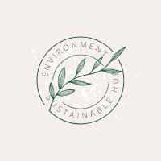

Overview
Purpose
I propose to create a personal website dedicated to promoting environmental sustainability and providing resources for individuals looking to live a more eco-friendly lifestyle. The website will offer information on sustainable practices, eco-friendly products, and tips for reducing one's carbon footprint. It will also feature blog posts and articles on relevant environmental topics.
Audience
The primary audience for this website will be environmentally conscious individuals who are seeking practical guidance and information on sustainable living. This may include eco-enthusiasts, students, young professionals, and families looking to make eco-conscious choices in their daily lives. The website will cater to both beginners looking for basic tips and seasoned environmentalists seeking more in-depth information and product recommendations.
Branding
Website Logo
Style Guide
Color Palette
Palette URL: https://coolors.co/606c38-283618-fefae0-dda15e-bc6c25
Typography
Heading Font: [Rock Salt]
Paragraph Font: [Roboto]
Navigation
Site Map
Content
Home page
I propose to create a homepage that serves as an introduction to the website, providing an overview of its mission and the importance of environmental sustainability. It will feature eye-catching images related to the environment and sustainability.
Sustainable Living Tips
This page will offer practical tips and advice on how individuals can live more sustainably. It will include articles and resources on topics such as reducing waste, energy conservation, sustainable transportation, and responsible consumer choices. Each article will be complemented by relevant images and links to related articles.
Eco-Friendly Products
This page will showcase a selection of eco-friendly products and provide information on where to purchase them. It will include product reviews, recommendations, and guides to making eco-conscious buying decisions. This page will also have images of the featured products and links to in-depth reviews.
Wireframes
Create three wireframes for your site. One for each page and list them here.
Content
Home page
The home page of the Environmental Sustainability Hub is the gateway to a world of eco-conscious living. Our mission is to inspire and empower individuals to make sustainable choices that benefit both the planet and their well-being. As you step into our virtual eco-oasis, you'll discover a wealth of information, inspiration, and resources to embark on a journey towards a greener and more environmentally responsible lifestyle.


Sustainable Living Tips
Our "Sustainable Living Tips" page is a valuable resource for anyone looking to make eco-conscious choices in their daily life. We provide a wealth of practical advice, articles, and resources to help you reduce your carbon footprint and live more sustainably. Topics covered on this page include waste reduction, energy conservation, sustainable transportation, responsible consumer choices, and much more. Each article is complemented by relevant images and links to related content, making it easy for you to explore and implement sustainable practices in your life. Whether you're new to the world of sustainability or a seasoned environmentalist, our tips and guidance are tailored to your needs.


Eco-Friendly Products
Our "Eco-Friendly Products" page is your go-to destination for discovering environmentally responsible products that align with your values. We showcase a carefully curated selection of eco-friendly items and provide information on where to purchase them. Explore product reviews, recommendations, and guides that will empower you to make informed and sustainable buying decisions. Each featured product is accompanied by images and links to in-depth reviews, ensuring that you have all the information you need to make eco-conscious choices. By choosing eco-friendly products, you not only reduce your environmental impact but also support companies that prioritize sustainability. Join us on the "Eco-Friendly Products" page to find products that make a positive difference for our planet.
 asd
asd

Home page

subpage1

subpage2